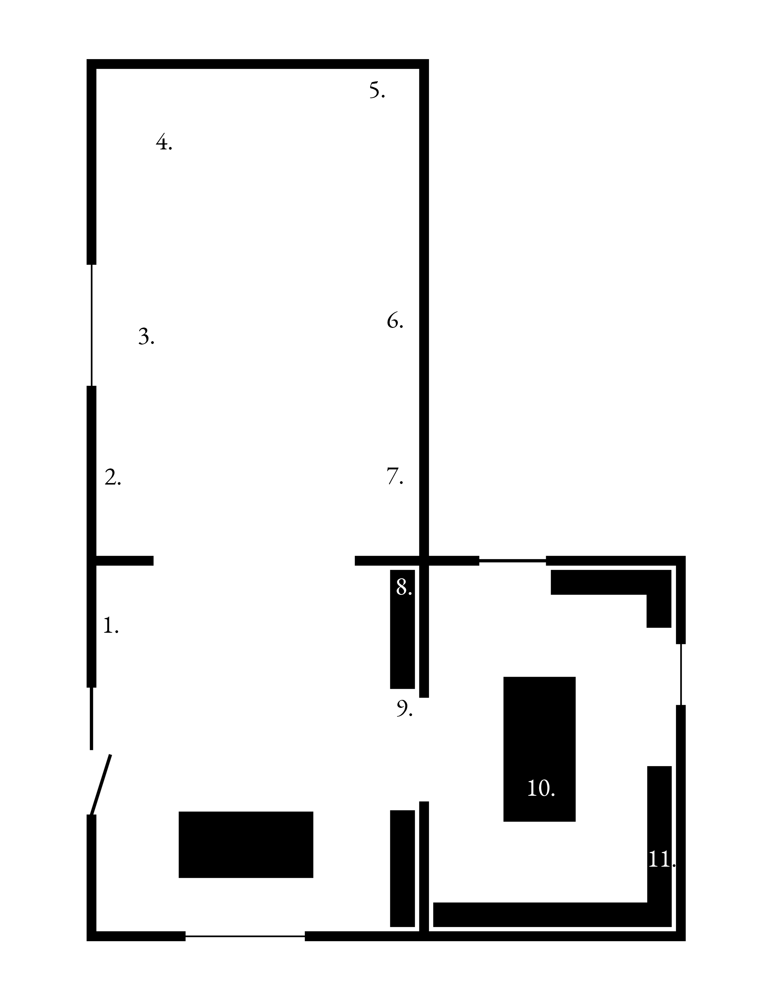

Honor First
Carlos Agredano, Samar Al-Summary, rafa esparza, Sophie Friedman-Pappas, D.A. Gonzales,
Christal Perez, Cielo Saucedo, and Charlotte Zhang
Organized by Harrison Kinnane Smith
Jan - March 2025
Marfa Book Company
Marfa, TX
In acknowledgment of the 2024 centenary of the United States Border Patrol, PlaceHolder presents Honor First,
an iterative, multi-site exhibition seeking to engage audiences from both sides of the US-Mexico and US-Canada
borders in critical dialogue around the legacies, investments, and futures of US border enforcement in North
America and abroad. Through a combination of artworks, texts, and programming, an evolving group of artists
respond to the development of American border policy from the first detention centers, through the Wars on
Drugs and Terror, to the “Virtual Border Wall.”
This project will be realized as a series of distinct exhibitions in locations selected for their relevance to US
immigration history. The first iteration of Honor First, consisting of work by eight Los Angeles-based artists,
will be brought to Marfa Book Company in Marfa, Texas from January 5 to March 23, 2025.

Works
1. Charlotte Zhang
On 07/19/16 at 1700 hours, I Detective Golan #38235, received information from Officer Zibli #30687, regarding the following incident. On 07/19/16 at approximately 1600-1630 hours, Officer Zibli was off-duty and inside LA Police Gear (a uniform shop in Santa Clarita). He walked inside the store and noticed a male and female (with a small boy) speaking Arabic to each other. The male selected a pair of uniform pants and the female took a plate carrier (vest without the Kevlar). The male, female, and child walked into the fitting room together and closed the door. Several minutes later, the three exited the room; the male was wearing the uniform pants and the plate carrier was no longer in the female’s hand. They approached the cashier and purchased the uniform pants. The male gave the name “Mohammad” to the clerk during the purchase. Afterwards, the three left the business, got into a black BMW, and drove to an unknown location. Officer Zibli managed to obtain the vehicle license plate (black BMW █████████████). LA Police Gear staff searched the fitting room for the plate carrier with negative results. It is possible that the plate carrier may have been hidden underneath the female’s burqa. LA Police Gear has surveillance videos inside the store. It is unknown if they reported the theft to the Santa Clarita Sheriff’s Department.
IP 1: male, other, 25-32 years, 5’09, 155, shaved head with a long black beard. Wearing a blue t-shirt, blue pants rolled up at the ankle, and blue shoes.
IP 2: female, other, 25-32 years, light skin complexion, wearing a black burqa without the veil. She also wore a white hijab that covered her hair, leaving only her face exposed to the public.
A search of Department resources revealed the following:
███████ ████████ ████ ███ ████ ███████ ███ ██████████ ████████ ██████ ████ █████ ████ ███ █████ ██████ ██ ██████ ████ ██████████ ████████ █████████████ ████ ███████████ ███ ██████████ ███ ████████ ████████ ███ █████████ ██████ ██████ ███ ███████████, 2024
Plate carrier
Dimensions variable
2. Samar Al Summary
Untitled (Beirut suburbs), Summer 2020
Inkjet print on Dibond
36” x 23”
3. Carlos Agredano
Shipped, 2021
Water and soil sourced from Ellis Island, NY, the Rio Grande near Brownsville, TX, and the Los Angeles River, CA; found Amazon box.
Dimensions variable
4. Cielo Saucedo, D. A. Gonzales, Christal Perez
Sense 001, 2024
Gaming software, c-stand, hdmi cable, 4 button keyboard, mousepad, wired mouse, projector, rolling chair, laptop, foam, rock
Dimensions variable.
5. Charlotte Zhang
American Muslim Radical - I was contacted by the manager of the Fitness Evolution gym in the city of Commerce, Ca regarding a person acting extremely unusual in his gym. Specifically: the subject (████████████ MB/35) has been a member of his gym for approximately 2 months, always parks his car outside of the gym parking lot and away from the security cameras and works out almost daily for a period of 4-8 hours without rest. During his workouts he always wears black clothes, sunglasses to cover his eyes and a black/white (Palestinian) checkered cloth over his head and face.
The subjects’ workouts are completely out of the ordinary from any person who would exercise in a gym (ie: body builder, martial arts, MMWA fighter, boxer, kick boxer, mountain climber, jogger or average fitness person). The subjects constantly adds extra weights and padding for balance, brings his own “homemade” add-on exercise handles then works a very small muscle group in the forearms and shoulders but does not attempt to gain size or mass.
The informant demonstrated to me the repetitive exercises and range of motion used by the subject. These motions resemble a person sitting in a chair or cockpit; using or pulling hand gear shifts levers and motions similar to controlling an old tractor, forklift or old airplane control sticks and short reaching motions above his head as if grabbing control knobs or overhead gears.
Based on the informant’s experience as a gym owner and exercise coach, the subjects unusual exercise behavior and radical Muslim style garb, he believes the subject is at the gym exercising for a specific, unknown endurance related mission or task versus physical fitness. The informant will provide additional pictures and gym video camera recordings of the subjects behavior.
There are three other informants willing to talk to investigators regarding the subjects odd behavior:
█████ ██████ ████████████ ████ ███████████████████ ████████ ████████ ████████████ ████ ██████ ███ ████ ███████████████████████ ███████ █████ █████████████ ████████ █████ ███ ████████, 2024
Polyester webbing, bicycle handlebar grips, d-rings, tape
Dimensions variable.
6. Samar Al Summary
Candle vigil during blackout in front of the ministry of electricity, headline: "The darkness is one of the
signs of the collapse" (Tyre), Summer 2020
Inkjet print on Dibond
43” x 36”
7. D. A. Gonzales
Autonomous Surveillance Tower #458--Perspective Views, 2024
Gelatin silver prints mounted on aluminum, in five parts
Variable widths from 2.5”-4” x 58”, overall dimensions variable.
8. Charlotte Zhang
On 07May2020 at approximately 0700 hrs I was notified of a Stuffed Giraffe located at the pedestrian turnstiles at the entrance of the DOD Facility in Seaside CA. I did not observe any surveillance on the pedestrian gate or any threats coming from the stuffed animal. I disposed of the stuffed Giraffe off site in a public dumpster. Photos, 2024
Stuffed giraffe
Dimensions variable.
9. Charlotte Zhang
A suspicious package was discovered in the court yard between the emergency room and the ICU at Froedtert South - St. Catherine's Hospital. The package was a ducted taped ball, approximately the size of a soccer ball, wrapped in a white hospital towel and placed just outside of the doorway in the courtyard. Kenosha County Bomb squad responded to the scene and determined the package safe. Once cut open a biohazard bag was discovered. Pleasant Prairie Fire Hazmat team was called in who opened the package and located a metal thermos containing a clear liquid with a neutral PH. It is unknown why the thermos and liquid was packaged in this manner and placed outside. It is also unknown who left the package or their reason., 2024
Duct tape, biohazard bag, thermos, hospital towel, neutral pH clear liquid
Dimensions variable.
10. Sophie Friedman-Pappas
Tipped-in Wall Street Insider's Tour, 2024
Mixed media on softcover book
Dimension variable.
11. Samar Al Summary
A newly welded bank barricade (Tripoli), April 2020
Inkjet print on Dibond
23.5” x 17.5”
Artists
Carlos Agredano (b. 1998 Los Angeles, CA) utilizes readymade and process-based sculptures to materialize issues of race and inequity, particularly within the context of American urban planning systems. Employing toxic, ephemeral, and site-specific material, Agredano’s work exposes how the design and organization of city space perpetuate disparity across Los Angeles and the greater United States.century. Agredano’s most recent exhibitions include: Por El Rio organized by Clockshop at the Los Angeles State Historic Park; Scupper and Strong Winds Ahead at François Ghebaly Gallery in Los Angeles; Smog Check at Human Resources Gallery in Los Angeles; CO, SO2, NO2, O3, PM2.5 and PM10 at the New Wight Gallery at UCLA; and In Practice: You May Go but This Will Bring You Back at Sculpture Center in New York City. He received his A.B. in History and Literature from Harvard University and his M.F.A. in Sculpture from the UCLA School of Art.
Shipped (2021) — a block of ice consisting of water from the Rio Grande, Ellis Island, and the Los Angeles River slotted inside of an Amazon delivery box — connects 19th-century steamship detainment camps to current detainment practices, which utilize shipping technology to surveil undocumented people in the United States. In the late 1830s, the state of Massachusetts began requiring shipmasters to pay fees for migrants arriving in America. Other Northeastern states soon followed, imposing similar measures to deter "undesirable" populations — a coded reference to non-Anglo immigrants and formerly enslaved Black people — from settling in their communities. Eventually, the U.S. government devised a more systematic approach: steamships were compelled to keep migrants on board, transforming these vessels into the nation’s first immigration detainment camps. In the 21st century, detainment practices have evolved, building on the prison-industrial complex to incorporate advanced technology. Private corporations, such as Amazon Web Services (AWS), a subsidiary of Amazon, and Palantir, profit from the U.S. government's efforts to detain migrants, predominantly from the Caribbean and Latin America. AWS, which holds the largest federal contract, provides Immigration and Customs Enforcement (ICE) with an integrated network of data systems that tracks undocumented individuals. Despite the ubiquity of the Amazon box, the extent to which Amazon’s data is exploited for surveillance remains unknown to many consumers. By filling the box with water from historic and contemporary detainment sites, the project subverts the object’s initial consumerist function, replacing it with one that resists ownership. As the water changes states, it liberates itself from containment — and over the course of its installment, will slowly destroy its container.
Samar Al Summary (b. 1988, Jeddah, Saudi Arabia) is an artist and writer whose work disorients west and east, progress and regress, belatedness and contemporariness. Al Summary has worked in video, installation, photography, and text. Her videos have screened at DOK Leipzig (October 2024), Duluth Superior Festival (October 2024), Museum für Neue Kunst during the Freiburg Biennial (June 2023), RIFF, Reykjavik International Film Festival, Reykjavik, Iceland (September 2020), Film Festival Oberhausen, Oberhausen, Germany (May 2020), Transient Visions Festival of the Moving Image, Johnson City, NY (October 2018), Currents New Media Festival, Santa Fe, NM (June 2017). She has been a fellow at Ashkal Alwan (Beirut 2019-2020). She has been an artist in residence at Skowhegan (June- August 2022), Tin House (March 2022), and Bemis (October-November 2021). She is currently pursuing an MFA in New Genres at University of California, Los Angeles, Los Angeles, CA. Her recent film, What goes up, won the Silver Dove for Best International Documentary Short at DOK Leipzig. What goes up will be screened at Beirut during the Home Works Forum 9, 2025.
Al Summary’s three photographs, fragmented street views captured in Lebanon during the first eight months of 2020, reflect the nation’s political and economic fragmentation during a time of unprecedented protests. These images symbolize the fractured Lebanese state, whose systemic failures stem from decades of corruption, sectarian divisions, and external pressures, including U.S. alliances and sanctions. The United States’ strategic partnership with Israel has further destabilized the region, limiting Lebanon’s ability to strengthen its secular army and bolstering the legitimacy of Shiite militias as the nation’s primary defense. Protests initially united the populace against government mismanagement, but U.S. sanctions targeting politicians and banks linked to these militias worsened an economic collapse, causing the lira to lose 98% of its value and forcing increased reliance on U.S. dollars. The photographs suggest that fragmentation is not only a reflection of collapse but also a potential call for radical deconstruction to uproot corruption at its core.
Early 2020, downtown Beirut.
This time around, when the authorities deployed the expired tear gas, instead of marching and chanting,
the protestors bellowed and surged. This rage was not lawfully mine, and that was the permit you needed
to protest that night, so I returned home and watched the 24 hour coverage.
The protestors arrived to the barricades in front of the road to the parliament building. Getting to that road had been their ardent desire and challenge for months.
They didn’t try to scale the barricades as they had attempted many times previously. Their rage led them to tear out every cobblestone in the road leading to the road to Parliament and throw the fragments at the national guards stationed at the head of the blocked road to parliament.
The battle went on for five hours until finally the amount of tear gas outweighed the protestors' onions. I
watched all night; I went down just before dawn with my camera. No protestors or bystanders. Dust over
fragmented road. The guardsmen were in shock and stared at me after their ordeal that had stretched
well beyond this night. For the sake of those poor motherfuckers who took all that beating for the war
criminals, I kept my camera pointed down, lens cap on.
This protest of pulling apart the street repeated itself more than eight months later in the aftermath of the explosion.
Coincidentally enough, these two street protests bookend my photographic series of objects in the streets in Lebanon. The objects were as provisional and temporary as we hoped the political system would prove to be.
In the Arab press, the voice of the people is often referred to hy the phrase, “the Arab street." Ever since the Arab spring, the Arab street has refused to keep it together. Fragmenting the road transforms the substrate, allowing traffic into what had been an obstacle to moving on. All that is left to us is to use our two hands to deconstruct the infrastructure and disrupt this system that aims to defeat us.
They (and you) have spent billions upon billions to scatter us to the four winds. Some of us ended up here.
rafa esparza (b. 1981, Los Angeles, CA) is a multidisciplinary artist whose work reveals his interests in history, personal narratives, kinship, colonization, and the disrupted genealogies it produces. Trained as a painter, but often using live performance as his main medium, esparza employs site-specificity, materiality, memory, and what he calls (non)documentation to investigate and expose ideologies, power structures, and binary forms of identity that establish narratives, history, and social environments. esparza’s recent projects are grounded in laboring with land and adobe-making, a skill learned from his father, Ramón Esparza. esparza’s two-person exhibitions have been held at Artists Space, New York (2023); Commonwealth and Council, Los Angeles (2021); MASS MoCA, North Adams (2019); ArtPace, San Antonio (2018); and Ballroom Marfa (2017). esparza’s work is in the collections of Aïshti Foundation, Beirut; AltaMed Art Collection, Los Angeles; Dallas Museum of Art; Kadist Art Foundation; Los Angeles County Museum of Art; Minneapolis Institute of Art; Museum of Contemporary Art, Los Angeles; Museum of Fine Arts, Houston; San Francisco Museum of Modern Art; San Jose Museum of Art; Solomon R. Guggenheim Museum, New York; Vincent Price Art Museum, Monterey Park; and Whitney Museum of American Art, New York.
esaparza will debut a new performance in March, 2025 during the closing weekend of Honor First.
Sophie Friedman-Pappas (b. 1995, New York, NY) divides her time between NYC and LA, recounting endless stories of utilitarian reappropriation, waste valorization, and the accidental undermining of these projects by their own patrons and designers. Her works are historical fictions that close with disappearance, whether that be the difference among materials dissolved or the narrative’s players’ personhood gone. The buildings in Manhattan’s Financial District turn into kilns, burnt lovers in a dovecote-cum-Airbnb become glaze on its walls, and the horse from the Wall Street bombing of 1920 gleefully loses identification with himself. One way or the other, they finish with orgiastic meltdowns and main characters turned into glue, glass, or nitroglycerin. Among Friedman-Pappas’ past solo and two-person exhibitions are: List Projects 28: Sophie Friedman-Pappas and TJ Shin at MIT List Center, Cambridge (2023-2024); Lacker at in lieu, Los Angeles (2023) with Maren Karlson; Hannah Black and Sophie Friedman-Pappas at Meredith Rosen Gallery, New York (2022). Friedman-Pappas holds an MFA from the University of California, Los Angeles.
In response to the 9/11 attacks, Congress capitalized on the paranoia gripping the United States to pass the Homeland Security Act of 2002. The legislation outlined creation of the Department of Homeland Security (DHS), under which Border Patrol was relocated from the newly-defunct Immigration and Naturalization Service. The structural reorganization of governmental departments and agencies undertaken to form DHS represents the United States’ largest bureaucratic restructuring since WWII. Tipped-in Wall Street Insider's Tour (2024) explores an earlier moment of xenophobia and terrorism that prefigured the nation’s reaction to 9/11. In this work, Friedman-Pappas describes the 1920 bombing, purportedly organized by Italian communist immigrants, of JP Morgan’s home on New York City’s Wall Street. Using casual, satirical language, the unidentified narrator compares this early 20th century attack to those carried out in 2001. The text is grafted onto Yale Law professor Jed Rubenfeld’s 2010 crime-thriller novel The Death Instinct, whose fictional narrative develops around the still-unsolved 1920 attack. Tipped-in represents one piece in a larger body of work by Friedman-Pappas exploring this early act of terrorism in America — an artwork that, in the context of Honor First, asks us to consider the idiosyncratic history of violent contestations to American empire and the role these acts have played in shaping US defense and border policies.
D.A. Gonzales (b. 1995, Bakersfield, CA) is a photographer from California’s Central Valley. He currently lives and works in Los Angeles and is a current MFA candidate at University of California, Los Angeles. Through both historic and contemporary modes of photographic technology, Gonzales explores the construction of the American Western subject. Looking at both private and public histories of post-mestizo identity, Gonzales interrogates the position of Whiteness within the Western landscape.
Survey of a Virtual Border (2024-) is a photographic project documenting autonomous surveillance towers that occupy the borderland between Mexico and the U.S. as part of the United States’ “virtual border wall.” Each sequence, made using a large format film camera and printed through a darkroom technique, records a series of perspective views within the operable viewing range of a tower. Using extreme crop and enlargement, the artist creates a series of typologies made up of “mural-size” silver gelatin prints isolating the direct line of sight between his camera and the surveillance tower. (In some cases the operable view is expanded, including field agents and helicopters.) This formatting disrupts the out-moded format of the traditional photographic landscape with the conceptual logic of the unframed crop — finding its place within, but at the margins of, the photographic tradition of the American West. Its framing draws alternate photographic associations along the vertical cross-section—infrastructure and landscape brought into tense relations. The unframed and unhung series attempts to more directly locate the viewer’s body within space, thinking through the surveillance system’s efforts to identify and evaluate the bodies (both organic and inorganic, animal and human) that move through the borderland space.
Christal Perez (b. 1990, Monterey Park, CA) is an interdisciplinary artist and writer based in Los Angeles, California. Her work interrogates the meta-narratives of history and exposes their fissures through sculpture, performance and video. She received a BA in Art from University of California, Los Angeles in 2019, and recently attained an MA in Art History at Williams College in 2022. She has shown at Vincent Price Art Museum, The Box, New Wight Gallery, Cal Arts, USC MFA Roski Studios, Human Resources, Last Projects, The Reef, and Palos Verdes Art Center.
Cielo Saucedo (b. 1993, Whittier, CA) lives and works in Los Angeles, CA. She is an access worker and artist from a family of migrant farm workers. They focus on the dispersal of ableism through cultural economies. They work to dissolve the curative aspirations of technology. Their practice encompasses writing, computer generated imagery, sculpture, machine vision and virtual reality. They received their BFA from School of the Art Institute, Chicago in 2020, and their MFA at University of California, Los Angeles in 2024. They are currently an Eyebeam Democracy Fellow (2024). Recent exhibitions of their work include presentations at The Armory, Pasadena for Getty PST (2024), Francios Ghebaly, Los Angeles (2024), Murmurs, Los Angeles (2024), BlankSpace, Pittsburgh (2023), New Image Gallery, Los Angeles (2023), Honor Fraser, Los Angeles (2024), MexiCali Biennale, The Cheech at the Riverside Museum (2023), Human Resources, Los Angeles (2022) Experimental Sound Studio, Chicago (2021) and Rudimiento, Quito (2021). They have given panels and lectures at NYU, UPenn, the Whitney Independent Study Program, Indiana State University, and the Sandberg Instituut, among other institutions.
In Gonzales, Perez, and Saucedo’s PC-hosted video game Sense 001 (2024), the player commits acts of electronic civil disobedience by disarming migrant-tracking Sentry towers. These towers, designed by Palmer Luckey’s techno-war manufacturer Anduril, are agents of the “Virtual Border.” Best known for his invention of the Oculus VR headset, Palmer’s fantasy of a collapsed virtual life is actualized through a bipartisan border politic that mines the physical and digital landscape in order to surveil and create data against migrating populations. The Sense 001 player starts in an office space and hacks into Anduril’s AI system, Lattice. By tapping into the tower using an Oculus VR headset (mimicking the actual procedures used by Border Patrol agents who operate the Sentry towers), the player uses the Sentry digital interface to detect life in the landscape before collapsing the network. They are faced with the accumulated gore and data enmeshed in the desert.
Charlotte Zhang (b. 1999, Canada) is an artist, filmmaker, and occasional writer interested in reenactments of shared fantasy, social scripts produced by spectacle, the libidinal investments and erotic economies that undergird state-sanctioned violence and other practices of nation-building, the perpetual collapse of punishment and celebration, vengeance.
Fusion centers are a post-9/11 invention inviting local, state, and federal agencies to partake in the unconstitutional gathering and sharing of information in order to neutralize potential terrorist threats. The program transforms police into domestic intelligence agents, and bundles of consumer data purchased from private brokers into the raw material of incrimination. In 2020, the BlueLeaks hack exposed approximately 270 GB of internal data from fusion centers across the country, including Suspicious Activity Reports (SARs) submitted by both law enforcement and civilians. The four exhibited works are reproductions of objects referenced in selected SARs, the full text of which constitute the title of each work; the works interpret and elaborate upon absences of description in the text. They are exercises in absence, much like the SARs themselves, which rely upon absence for coherence — absences of reason and recognition, codified as threat and concealment within the state security apparatus. Transgressions that appear to occur between the poles of state and civilian, citizen and Other, ultimately stabilize the definitions of each. Isolated in the fortified environment of the exhibition, they consider the ways in which the suspicious object is ontologically contingent upon its proximity to racialized subjects and/or federal facilities.